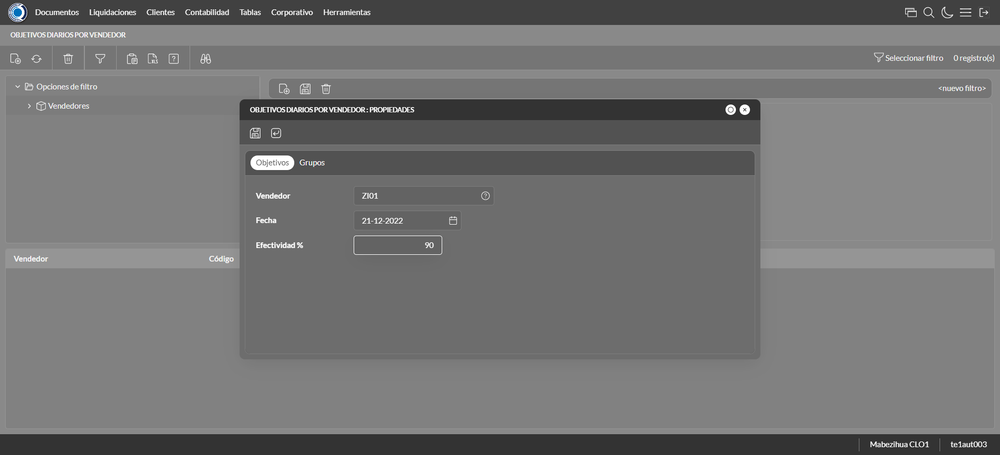
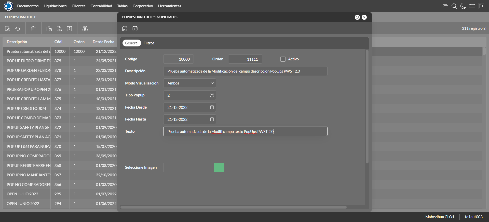
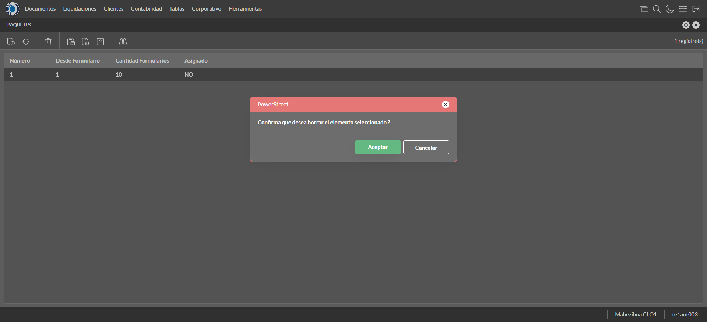
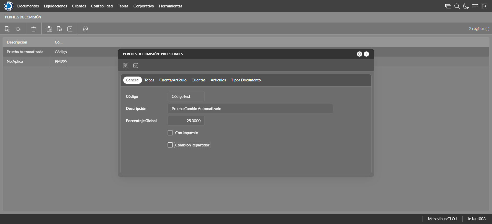
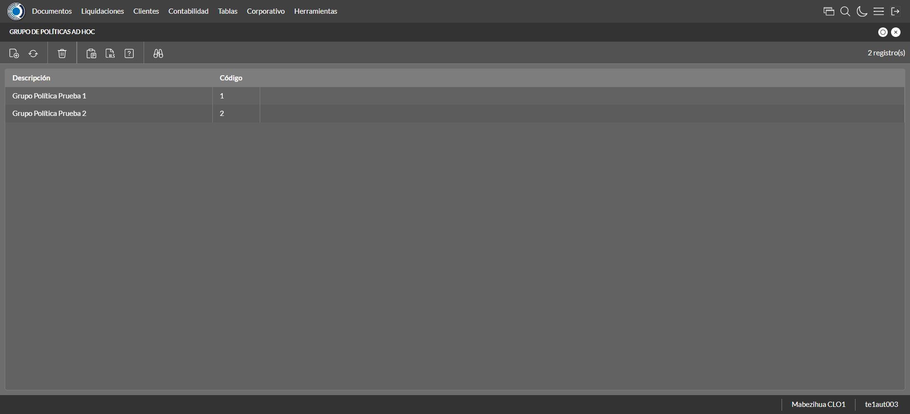
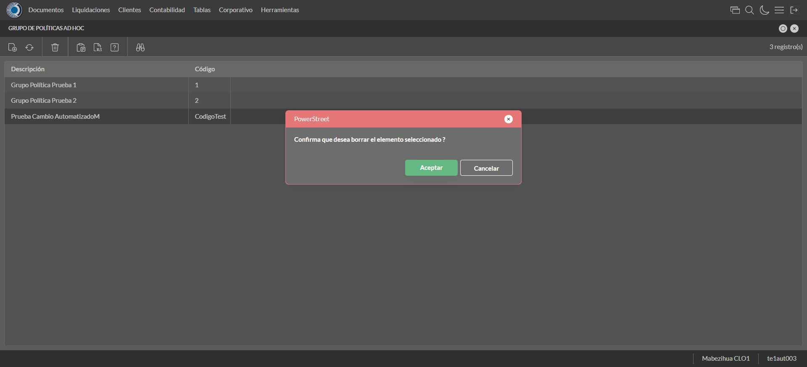

Desarrollado por : Area de Testing PWST
Fecha y hora de inicio : 2022-12-21 11:37:12
Duracion : 0:05:13.880031
Resultado : Total 42，Correctos 41 ，Errores 1 ，Taza de resultado 97.62%
Resumen 97.62% Errores 1 Fallidos 0 Correctos 41 Test realizados 42
| Caso de Prueba | Total | Correctos | Fallido | Error | Detalles | Captura del error |
| ScriptAmarillo.Test: Script Amarillo | 42 | 41 | 0 | 1 | Detalles | |
test |
ft1_1: 2022-12-21 11:37:13,955 - root - INFO - Se abre el chrome
2022-12-21 11:37:15,360 - root - INFO - Entra a la URL
2022-12-21 11:37:15,485 - root - INFO - Maximiza la pantalla
Traceback (most recent call last):
File "C:\Users\jsand\AppData\Local\Programs\Python\Python310\lib\site-packages\selenium-4.4.0-py3.10.egg\selenium\webdriver\remote\switch_to.py", line 87, in frame
frame_reference = self._driver.find_element(By.ID, frame_reference)
File "C:\Users\jsand\AppData\Local\Programs\Python\Python310\lib\site-packages\selenium-4.4.0-py3.10.egg\selenium\webdriver\remote\webdriver.py", line 856, in find_element
return self.execute(Command.FIND_ELEMENT, {
File "C:\Users\jsand\AppData\Local\Programs\Python\Python310\lib\site-packages\selenium-4.4.0-py3.10.egg\selenium\webdriver\remote\webdriver.py", line 434, in execute
self.error_handler.check_response(response)
File "C:\Users\jsand\AppData\Local\Programs\Python\Python310\lib\site-packages\selenium-4.4.0-py3.10.egg\selenium\webdriver\remote\errorhandler.py", line 243, in check_response
raise exception_class(message, screen, stacktrace)
selenium.common.exceptions.NoSuchElementException: Message: no such element: Unable to locate element: {"method":"css selector","selector":"[id="mainFrame"]"}
(Session info: chrome=108.0.5359.125)
Stacktrace:
Backtrace:
(No symbol) [0x00BFF243]
(No symbol) [0x00B87FD1]
(No symbol) [0x00A7D04D]
(No symbol) [0x00AAC0B0]
(No symbol) [0x00AAC22B]
(No symbol) [0x00ADE612]
(No symbol) [0x00AC85D4]
(No symbol) [0x00ADC9EB]
(No symbol) [0x00AC8386]
(No symbol) [0x00AA163C]
(No symbol) [0x00AA269D]
GetHandleVerifier [0x00E99A22+2655074]
GetHandleVerifier [0x00E8CA24+2601828]
GetHandleVerifier [0x00CA8C0A+619850]
GetHandleVerifier [0x00CA7830+614768]
(No symbol) [0x00B905FC]
(No symbol) [0x00B95968]
(No symbol) [0x00B95A55]
(No symbol) [0x00BA051B]
BaseThreadInitThunk [0x76796BD9+25]
RtlGetFullPathName_UEx [0x77B58FD2+1218]
RtlGetFullPathName_UEx [0x77B58F9D+1165]
During handling of the above exception, another exception occurred:
Traceback (most recent call last):
File "C:\Users\jsand\AppData\Local\Programs\Python\Python310\lib\site-packages\selenium-4.4.0-py3.10.egg\selenium\webdriver\remote\switch_to.py", line 90, in frame
frame_reference = self._driver.find_element(By.NAME, frame_reference)
File "C:\Users\jsand\AppData\Local\Programs\Python\Python310\lib\site-packages\selenium-4.4.0-py3.10.egg\selenium\webdriver\remote\webdriver.py", line 856, in find_element
return self.execute(Command.FIND_ELEMENT, {
File "C:\Users\jsand\AppData\Local\Programs\Python\Python310\lib\site-packages\selenium-4.4.0-py3.10.egg\selenium\webdriver\remote\webdriver.py", line 434, in execute
self.error_handler.check_response(response)
File "C:\Users\jsand\AppData\Local\Programs\Python\Python310\lib\site-packages\selenium-4.4.0-py3.10.egg\selenium\webdriver\remote\errorhandler.py", line 243, in check_response
raise exception_class(message, screen, stacktrace)
selenium.common.exceptions.NoSuchElementException: Message: no such element: Unable to locate element: {"method":"css selector","selector":"[name="mainFrame"]"}
(Session info: chrome=108.0.5359.125)
Stacktrace:
Backtrace:
(No symbol) [0x00BFF243]
(No symbol) [0x00B87FD1]
(No symbol) [0x00A7D04D]
(No symbol) [0x00AAC0B0]
(No symbol) [0x00AAC22B]
(No symbol) [0x00ADE612]
(No symbol) [0x00AC85D4]
(No symbol) [0x00ADC9EB]
(No symbol) [0x00AC8386]
(No symbol) [0x00AA163C]
(No symbol) [0x00AA269D]
GetHandleVerifier [0x00E99A22+2655074]
GetHandleVerifier [0x00E8CA24+2601828]
GetHandleVerifier [0x00CA8C0A+619850]
GetHandleVerifier [0x00CA7830+614768]
(No symbol) [0x00B905FC]
(No symbol) [0x00B95968]
(No symbol) [0x00B95A55]
(No symbol) [0x00BA051B]
BaseThreadInitThunk [0x76796BD9+25]
RtlGetFullPathName_UEx [0x77B58FD2+1218]
RtlGetFullPathName_UEx [0x77B58F9D+1165]
During handling of the above exception, another exception occurred:
Traceback (most recent call last):
File "C:\xampp\htdocs\versiones\automatizaciones\AutoPWST\ScriptAmarillo\testCase\ScriptAmarillo.py", line 90, in test
self.driver.switch_to.frame("mainFrame")
File "C:\Users\jsand\AppData\Local\Programs\Python\Python310\lib\site-packages\selenium-4.4.0-py3.10.egg\selenium\webdriver\remote\switch_to.py", line 92, in frame
raise NoSuchFrameException(frame_reference)
selenium.common.exceptions.NoSuchFrameException: Message: mainFrame
|
|
||||
test_000: Ingresa a la base de datos |
pt1_2: 2022-12-21 11:37:18,575 - root - INFO - Escribe el usuario
2022-12-21 11:37:18,644 - root - INFO - Escribe la contraseña
2022-12-21 11:37:18,719 - root - INFO - Se dio clic en el boton ingresar
2022-12-21 11:37:19,408 - root - INFO - Ejecutar Enterprise
2022-12-21 11:37:23,465 - root - INFO - Cambia entre pestañas
|
|
||||
test_001: Ingresa a pantalla Objetivos Diarios |
pt1_3: 2022-12-21 11:37:33,778 - root - INFO - Abre la pantalla de Objetivos Diarios
2022-12-21 11:37:34,335 - root - INFO - La pantalla ejecutada es Lista de precios.
2022-12-21 11:37:34,335 - root - INFO - Captura: C:\xampp\htdocs\versiones\automatizaciones\AutoPWST\ScriptAmarillo\report\img screen：20221221_11_37_34.png
2022-12-21 11:37:34,517 - root - INFO - Se presiona el boton 'Refrescar', para crear un nuevo registro igual al anterior.
2022-12-21 11:37:44,959 - root - INFO - Se presiona el boton 'Nuevo', para crear un nuevo registro.
|

|
||||
test_002: Agregar Objetivos Diarios |
pt1_4: 2022-12-21 11:37:45,516 - root - INFO - Se abrio la pantalla para el ingreso de un registro nuevo.
2022-12-21 11:37:45,547 - root - INFO - El campo 'Vendedor' si se encuentra visible.
2022-12-21 11:37:45,575 - root - INFO - El campo 'Fecha' si se encuentra visible.
2022-12-21 11:37:45,606 - root - INFO - El campo 'Efectividad %' si se encuentra visible.
2022-12-21 11:37:47,162 - root - INFO - Ingresa la efectividad del nuevo registro
2022-12-21 11:37:49,171 - root - INFO - Captura: C:\xampp\htdocs\versiones\automatizaciones\AutoPWST\ScriptAmarillo\report\img screen：20221221_11_37_49.png
2022-12-21 11:37:49,412 - root - INFO - Se hace el cambio de pestaña para continuar con el registro nuevo
2022-12-21 11:37:50,000 - root - INFO - Se presiona el boton 'Nuevo', para crear un nuevo registro.
2022-12-21 11:37:50,567 - root - INFO - El campo 'Grupo Política' si se encuentra visible.
2022-12-21 11:37:50,630 - root - INFO - El campo 'Tipo Objetivo' si se encuentra visible.
2022-12-21 11:37:50,662 - root - INFO - El campo 'Tipo Unidad' si se encuentra visible.
2022-12-21 11:37:50,696 - root - INFO - El campo 'Objetivo Cantidad' si se encuentra visible.
2022-12-21 11:37:50,724 - root - INFO - El campo 'Objetivo Cobertura' si se encuentra visible.
2022-12-21 11:37:52,675 - root - INFO - Ingresa el Objetivo Cantidad del nuevo registro
2022-12-21 11:37:52,736 - root - INFO - Ingresa el Objetivo Cobertura del nuevo registro
2022-12-21 11:37:52,788 - root - INFO - Se da clic en el boton Guardar; se debe crear un nuevo registro.
2022-12-21 11:37:52,983 - root - INFO - Se da clic en el boton Guardar; se debe crear un nuevo registro.
|
 | ||||
test_003: Repetir Registro Objetivos Diarios |
pt1_5: 2022-12-21 11:37:53,171 - root - INFO - Se presiona el boton 'Refrescar', para crear un nuevo registro igual al anterior.
2022-12-21 11:37:58,242 - root - INFO - Se presiona el boton 'Nuevo', para crear un nuevo registro igual al anterior.
2022-12-21 11:37:58,796 - root - INFO - Se abrio la pantalla para el ingreso de un registro nuevo.
2022-12-21 11:37:58,837 - root - INFO - El campo 'Vendedor' si se encuentra visible.
2022-12-21 11:37:58,877 - root - INFO - El campo 'Fecha' si se encuentra visible.
2022-12-21 11:37:58,913 - root - INFO - El campo 'Efectividad %' si se encuentra visible.
2022-12-21 11:38:00,522 - root - INFO - Ingresa la efectividad del nuevo registro
2022-12-21 11:38:00,618 - root - INFO - Se da clic en el boton Guardar; se debe crear un nuevo registro.
2022-12-21 11:38:02,628 - root - INFO - Captura: C:\xampp\htdocs\versiones\automatizaciones\AutoPWST\ScriptAmarillo\report\img screen：20221221_11_38_02.png
2022-12-21 11:38:02,988 - root - INFO - Se presiona el boton 'Cerrar', para cerrar el mensaje de duplicidad de llave primaria
2022-12-21 11:38:03,081 - root - INFO - Se presiona el boton 'Cerrar', para cerrar la ventana
|
|||||
test_004: Modifica Objetivos Diarios |
pt1_6: 2022-12-21 11:38:03,162 - root - INFO - Se presiona el boton 'Refrescar', para crear un nuevo registro igual al anterior.
2022-12-21 11:38:04,802 - root - INFO - Se da clic en el registro creado, para proceder a modificarlo.
2022-12-21 11:38:05,410 - root - INFO - Ingresa la efectividad del nuevo registro
2022-12-21 11:38:07,416 - root - INFO - Captura: C:\xampp\htdocs\versiones\automatizaciones\AutoPWST\ScriptAmarillo\report\img screen：20221221_11_38_07.png
2022-12-21 11:38:07,639 - root - INFO - Se hace el cambio de pestaña para continuar con el registro nuevo
2022-12-21 11:38:08,743 - root - INFO - Se da clic en el registro creado, para proceder a modificarlo.
2022-12-21 11:38:10,663 - root - INFO - Ingresa el Objetivo Cantidad del nuevo registro
2022-12-21 11:38:10,764 - root - INFO - Ingresa el Objetivo Cobertura del nuevo registro
2022-12-21 11:38:10,835 - root - INFO - Se da clic en el boton Guardar; se debe crear un nuevo registro.
2022-12-21 11:38:11,001 - root - INFO - Se da clic en el boton Guardar; se debe modificar la informacion del registro.
|

|
||||
test_005: Elimina Objetivos Diarios |
pt1_7: 2022-12-21 11:38:11,185 - root - INFO - Se presiona el boton 'Refrescar', para proceder a eliminar el registro.
2022-12-21 11:38:12,836 - root - INFO - Se da clic en el registro creado, para proceder a eliminarlo.
2022-12-21 11:38:12,898 - root - INFO - Se presiona el boton 'Eliminar', para eliminar el registro.
2022-12-21 11:38:14,909 - root - INFO - Captura: C:\xampp\htdocs\versiones\automatizaciones\AutoPWST\ScriptAmarillo\report\img screen：20221221_11_38_14.png
2022-12-21 11:38:15,122 - root - INFO - Se confirma el eliminado del registro
2022-12-21 11:38:15,298 - root - INFO - Se presiona el boton 'Refrescar', para crear un nuevo registro igual al anterior.
2022-12-21 11:38:15,420 - root - INFO - Se presiona el boton 'Cerrar', para cerrar la pantalla de Categorias Fiscales.
|

|
||||
test_006: Ingresa a pantalla Pop Ups |
pt1_8: 2022-12-21 11:38:16,335 - root - INFO - Abre la pantalla de PopUps
2022-12-21 11:38:16,887 - root - INFO - La pantalla ejecutada es PopUps.
2022-12-21 11:38:17,896 - root - INFO - Captura: C:\xampp\htdocs\versiones\automatizaciones\AutoPWST\ScriptAmarillo\report\img screen：20221221_11_38_17.png
2022-12-21 11:38:19,202 - root - INFO - Se ordenó por codigo.
2022-12-21 11:38:29,695 - root - INFO - Se presiona el boton 'Nuevo', para crear un nuevo registro.
|

|
||||
test_007: Agregar Pop Ups |
pt1_9: 2022-12-21 11:38:30,241 - root - INFO - Se abrio la pantalla para el ingreso de un registro nuevo.
2022-12-21 11:38:30,270 - root - INFO - El campo 'Codigo' si se encuentra visible.
2022-12-21 11:38:30,298 - root - INFO - El campo 'Orden' si se encuentra visible.
2022-12-21 11:38:30,329 - root - INFO - El campo 'Activo' si se encuentra visible.
2022-12-21 11:38:30,360 - root - INFO - El campo 'Descrición' si se encuentra visible.
2022-12-21 11:38:30,389 - root - INFO - El campo 'Modo Visualización' si se encuentra visible.
2022-12-21 11:38:30,420 - root - INFO - El campo 'Tipo Popup' si se encuentra visible.
2022-12-21 11:38:30,450 - root - INFO - El campo 'Fecha Desde' si se encuentra visible.
2022-12-21 11:38:30,485 - root - INFO - El campo 'Fecha Hasta' si se encuentra visible.
2022-12-21 11:38:30,514 - root - INFO - El campo 'Texto' si se encuentra visible.
2022-12-21 11:38:30,545 - root - INFO - El campo 'Seleccione Imagen' si se encuentra visible.
2022-12-21 11:38:30,593 - root - INFO - Ingresa el codigo del nuevo registro
2022-12-21 11:38:30,681 - root - INFO - Ingresa la orden del nuevo registro
2022-12-21 11:38:31,781 - root - INFO - Hizo click en el checkbox Activo
2022-12-21 11:38:31,921 - root - INFO - Ingresa la descripción del nuevo registro
2022-12-21 11:38:32,269 - root - INFO - Se dió click en la opción Pantalla Held.
2022-12-21 11:38:33,525 - root - INFO - Se dió doble click en el registro de Tipo Pop Up.
2022-12-21 11:38:33,694 - root - INFO - Ingresa el texto del nuevo registro
2022-12-21 11:38:34,708 - root - INFO - Captura: C:\xampp\htdocs\versiones\automatizaciones\AutoPWST\ScriptAmarillo\report\img screen：20221221_11_38_34.png
2022-12-21 11:38:34,891 - root - INFO - Se da clic en el boton Guardar; se debe crear un nuevo registro.
|

|
||||
test_008: Repetir Registro Pop Ups |
pt1_10: 2022-12-21 11:38:35,138 - root - INFO - Se presiona el boton 'Refrescar', para crear un nuevo registro igual al anterior.
2022-12-21 11:38:35,727 - root - INFO - Se presiona el boton 'Nuevo', para crear un nuevo registro igual al anterior.
2022-12-21 11:38:36,280 - root - INFO - Se abrio la pantalla para el ingreso de un registro nuevo.
2022-12-21 11:38:36,308 - root - INFO - El campo 'Codigo' si se encuentra visible.
2022-12-21 11:38:36,337 - root - INFO - El campo 'Orden' si se encuentra visible.
2022-12-21 11:38:36,363 - root - INFO - El campo 'Activo' si se encuentra visible.
2022-12-21 11:38:36,389 - root - INFO - El campo 'Descrición' si se encuentra visible.
2022-12-21 11:38:36,416 - root - INFO - El campo 'Modo Visualización' si se encuentra visible.
2022-12-21 11:38:36,444 - root - INFO - El campo 'Tipo Popup' si se encuentra visible.
2022-12-21 11:38:36,471 - root - INFO - El campo 'Fecha Desde' si se encuentra visible.
2022-12-21 11:38:36,498 - root - INFO - El campo 'Fecha Hasta' si se encuentra visible.
2022-12-21 11:38:36,526 - root - INFO - El campo 'Texto' si se encuentra visible.
2022-12-21 11:38:36,554 - root - INFO - El campo 'Seleccione Imagen' si se encuentra visible.
2022-12-21 11:38:36,597 - root - INFO - Ingresa el codigo del nuevo registro
2022-12-21 11:38:36,657 - root - INFO - Ingresa la orden del nuevo registro
2022-12-21 11:38:37,768 - root - INFO - Hizo click en el checkbox Activo
2022-12-21 11:38:37,986 - root - INFO - Ingresa la descripción del nuevo registro
2022-12-21 11:38:38,400 - root - INFO - Se dió click en la opción Pantalla Hand Held.
2022-12-21 11:38:39,426 - root - INFO - Se dió doble click en el registro de Tipo PopUp.
2022-12-21 11:38:39,936 - root - INFO - Ingresa el texto del nuevo registro
2022-12-21 11:38:40,280 - root - INFO - Se da clic en el boton Guardar; NO se debe crear un nuevo registro.
2022-12-21 11:38:41,292 - root - INFO - Captura: C:\xampp\htdocs\versiones\automatizaciones\AutoPWST\ScriptAmarillo\report\img screen：20221221_11_38_41.png
2022-12-21 11:38:42,000 - root - INFO - Se presiona el boton 'Cerrar', para cerrar el mensaje de duplicidad de llave primaria
2022-12-21 11:38:42,261 - root - INFO - Se presiona el boton 'Cerrar', para cerrar la ventana
|
|||||
test_009: Modifica Pop Ups |
pt1_11: 2022-12-21 11:38:42,490 - root - INFO - Se presiona el boton 'Refrescar', para proceder a modificar el registro.
2022-12-21 11:38:45,936 - root - INFO - Se dió dos veces click en el encabezado para modificar el orden de los registros.
2022-12-21 11:38:47,924 - root - INFO - Se da clic en el registro creado, para proceder a modificarlo.
2022-12-21 11:38:49,650 - root - INFO - Se modifica el contenido del campo Orden
2022-12-21 11:38:51,339 - root - INFO - Hizo click en el checkbox activo
2022-12-21 11:38:52,513 - root - INFO - Se modifica el contenido del campo Descripción
2022-12-21 11:38:53,153 - root - INFO - Se dió click en la opción Ambos.
2022-12-21 11:38:54,263 - root - INFO - Se dió doble click en el registro de Tipo PopUp.
2022-12-21 11:38:55,100 - root - INFO - Se modifica el contenido del campo Texto
2022-12-21 11:38:56,126 - root - INFO - Captura: C:\xampp\htdocs\versiones\automatizaciones\AutoPWST\ScriptAmarillo\report\img screen：20221221_11_38_56.png
2022-12-21 11:38:57,154 - root - INFO - Se da clic en el boton Guardar; se debe modificar la informacion del registro.
|
 | ||||
test_010: Elimina PopUps |
pt1_12: 2022-12-21 11:38:57,508 - root - INFO - Se presiona el boton 'Refrescar', para proceder a eliminar el registro.
2022-12-21 11:38:59,353 - root - INFO - Se da clic en el registro creado, para proceder a eliminarlo.
2022-12-21 11:39:00,647 - root - INFO - Se presiona el boton 'Eliminar', para eliminar el registro.
2022-12-21 11:39:00,649 - root - INFO - Captura: C:\xampp\htdocs\versiones\automatizaciones\AutoPWST\ScriptAmarillo\report\img screen：20221221_11_39_00.png
2022-12-21 11:39:01,967 - root - INFO - Se confirma el eliminado del registro
2022-12-21 11:39:03,216 - root - INFO - Se presiona el boton 'Refrescar', para veriicar si el registro ha sido eliminado.
2022-12-21 11:39:04,881 - root - INFO - Se presiona el boton 'Cerrar', para cerrar la pantalla de Pop Ups.
|

|
||||
test_011: Ingresa a pantalla Paquetes Formulario |
pt1_13: 2022-12-21 11:39:06,303 - root - INFO - Abre la pantalla de Paquetes de Formularios
2022-12-21 11:39:06,944 - root - INFO - Captura: C:\xampp\htdocs\versiones\automatizaciones\AutoPWST\ScriptAmarillo\report\img screen：20221221_11_39_06.png
2022-12-21 11:39:07,323 - root - INFO - La pantalla ejecutada es Zonas de Ventas.
2022-12-21 11:39:17,681 - root - INFO - Se presiona el boton 'Nuevo', para crear un nuevo registro.
|

|
||||
test_012: Agregar Paquetes Formulario |
pt1_14: 2022-12-21 11:39:18,228 - root - INFO - Se abrio la pantalla para el ingreso de un registro nuevo.
2022-12-21 11:39:18,260 - root - INFO - El campo 'Número Paquete' si se encuentra visible.
2022-12-21 11:39:18,293 - root - INFO - El campo 'Formulario Inicial' si se encuentra visible.
2022-12-21 11:39:18,327 - root - INFO - El campo 'Cantidad Formularios' si se encuentra visible.
2022-12-21 11:39:19,382 - root - INFO - Captura: C:\xampp\htdocs\versiones\automatizaciones\AutoPWST\ScriptAmarillo\report\img screen：20221221_11_39_19.png
2022-12-21 11:39:19,524 - root - INFO - Ingresa la cantidad de formularios del nuevo registro
2022-12-21 11:39:19,575 - root - INFO - Se da clic en el boton Guardar; se debe crear un nuevo registro.
|

|
||||
test_013: Modifica Paquetes Formulario |
pt1_15: 2022-12-21 11:39:19,819 - root - INFO - Se presiona el boton 'Refrescar', para crear un nuevo registro igual al anterior.
2022-12-21 11:39:21,948 - root - INFO - Se da clic en el registro creado, para proceder a modificarlo.
2022-12-21 11:39:22,964 - root - INFO - Captura: C:\xampp\htdocs\versiones\automatizaciones\AutoPWST\ScriptAmarillo\report\img screen：20221221_11_39_22.png
2022-12-21 11:39:23,174 - root - INFO - Se presiona el boton 'Cerrar', para cerrar la ventana
|

|
||||
test_014: Elimina Paquetes Formulario |
pt1_16: 2022-12-21 11:39:23,290 - root - INFO - Se presiona el boton 'Refrescar', para proceder a eliminar el registro.
2022-12-21 11:39:24,911 - root - INFO - Se da clic en el registro creado, para proceder a eliminarlo.
2022-12-21 11:39:24,974 - root - INFO - Se presiona el boton 'Eliminar', para eliminar el registro.
2022-12-21 11:39:25,983 - root - INFO - Captura: C:\xampp\htdocs\versiones\automatizaciones\AutoPWST\ScriptAmarillo\report\img screen：20221221_11_39_25.png
2022-12-21 11:39:26,196 - root - INFO - Se confirma el eliminado del registro
2022-12-21 11:39:26,372 - root - INFO - Se presiona el boton 'Refrescar', para crear un nuevo registro igual al anterior.
2022-12-21 11:39:26,504 - root - INFO - Se presiona el boton 'Cerrar', para cerrar la pantalla de Categorias Fiscales.
|
 | ||||
test_015: Ingresa a pantalla Perfiles Comision |
pt1_17: 2022-12-21 11:39:27,415 - root - INFO - Abre la pantalla de Perfiles de Comisión
2022-12-21 11:39:27,993 - root - INFO - La pantalla ejecutada es Perfiles de Comisión.
2022-12-21 11:39:27,993 - root - INFO - Captura: C:\xampp\htdocs\versiones\automatizaciones\AutoPWST\ScriptAmarillo\report\img screen：20221221_11_39_27.png
2022-12-21 11:39:38,619 - root - INFO - Se presiona el boton 'Nuevo', para crear un nuevo registro.
|

|
||||
test_016: Agregar Perfiles Comision |
pt1_18: 2022-12-21 11:39:39,156 - root - INFO - Se abrio la pantalla para el ingreso de un registro nuevo.
2022-12-21 11:39:39,184 - root - INFO - El campo 'Codigo' si se encuentra visible.
2022-12-21 11:39:39,215 - root - INFO - El campo 'Descrición' si se encuentra visible.
2022-12-21 11:39:39,244 - root - INFO - El campo 'Porcentaje Global' si se encuentra visible.
2022-12-21 11:39:39,276 - root - INFO - El campo 'Con impuesto' si se encuentra visible.
2022-12-21 11:39:39,307 - root - INFO - El campo 'Comisión Repartidor' si se encuentra visible.
2022-12-21 11:39:39,347 - root - INFO - Ingresa el codigo del nuevo registro
2022-12-21 11:39:39,405 - root - INFO - Ingresa la descripción del nuevo registro
2022-12-21 11:39:39,462 - root - INFO - Ingresa el Porcentaje Global del nuevo registro
2022-12-21 11:39:39,521 - root - INFO - Se hizó click en el Checkbox Con impuesto
2022-12-21 11:39:39,579 - root - INFO - Se hizó click en el checkbox Comisión Repartidor
2022-12-21 11:39:40,588 - root - INFO - Captura: C:\xampp\htdocs\versiones\automatizaciones\AutoPWST\ScriptAmarillo\report\img screen：20221221_11_39_40.png
2022-12-21 11:39:40,793 - root - INFO - Se hace el cambio a la pestaña Topes para continuar con el registro nuevo
2022-12-21 11:39:41,361 - root - INFO - Se presiona el boton 'Nuevo', para crear un nuevo registro de Topes.
2022-12-21 11:39:41,934 - root - INFO - El campo 'Moneda' si se encuentra visible.
2022-12-21 11:39:41,963 - root - INFO - El campo 'Tope' si se encuentra visible.
2022-12-21 11:39:41,993 - root - INFO - El campo 'Porcentaje' si se encuentra visible.
2022-12-21 11:39:42,907 - root - INFO - Se dió doble click en el registro de Moneda.
2022-12-21 11:39:43,044 - root - INFO - Ingresa el tope del nuevo registro
2022-12-21 11:39:43,172 - root - INFO - Ingresa el Porcentaje del nuevo registro
2022-12-21 11:39:43,273 - root - INFO - Se da clic en el boton Guardar; se debe crear un nuevo registro de Topes.
2022-12-21 11:39:43,481 - root - INFO - Se hace el cambio a la pestaña Cuenta Articulo para continuar con el registro nuevo
2022-12-21 11:39:44,120 - root - INFO - Se presiona el boton 'Nuevo', para crear un nuevo registro de Cuenta Articulo.
2022-12-21 11:39:44,694 - root - INFO - El campo 'Cuenta' si se encuentra visible.
2022-12-21 11:39:44,736 - root - INFO - El campo 'Artículo' si se encuentra visible.
2022-12-21 11:39:44,778 - root - INFO - El campo 'Porcentaje' si se encuentra visible.
2022-12-21 11:39:46,370 - root - INFO - Se dió doble click en el registro de Cuenta.
2022-12-21 11:39:47,760 - root - INFO - Se dió doble click en el registro de Articulo.
2022-12-21 11:39:48,006 - root - INFO - Ingresa el Porcentaje del nuevo registro
2022-12-21 11:39:48,192 - root - INFO - Se da clic en el boton Guardar; se debe crear un nuevo registro de Cuenta Articulo.
2022-12-21 11:39:48,414 - root - INFO - Se hace el cambio a la pestaña Cuentas para continuar con el registro nuevo
2022-12-21 11:39:49,175 - root - INFO - Se presiona el boton 'Nuevo', para crear un nuevo registro de Cuentas.
2022-12-21 11:39:49,772 - root - INFO - El campo 'Cuenta' si se encuentra visible.
2022-12-21 11:39:49,842 - root - INFO - El campo 'Porcentaje' si se encuentra visible.
2022-12-21 11:39:51,420 - root - INFO - Se dió doble click en el registro de Cuenta.
2022-12-21 11:39:51,614 - root - INFO - Ingresa el Porcentaje del nuevo registro
2022-12-21 11:39:51,722 - root - INFO - Se da clic en el boton Guardar; se debe crear un nuevo registro de Cuentas.
2022-12-21 11:39:51,937 - root - INFO - Se hace el cambio a la pestaña Articulos para continuar con el registro nuevo
2022-12-21 11:39:52,539 - root - INFO - Se presiona el boton 'Nuevo', para crear un nuevo registro de Articulos.
2022-12-21 11:39:53,079 - root - INFO - El campo 'Artículo' si se encuentra visible.
2022-12-21 11:39:53,110 - root - INFO - El campo 'Porcentaje' si se encuentra visible.
2022-12-21 11:39:54,053 - root - INFO - Se dió doble click en el registro de Articulo.
2022-12-21 11:39:54,130 - root - INFO - Ingresa el Porcentaje del nuevo registro
2022-12-21 11:39:54,270 - root - INFO - Se da clic en el boton Guardar; se debe crear un nuevo registro de Articulos.
2022-12-21 11:39:54,438 - root - INFO - Se hace el cambio a la pestaña Tipos de Documento para continuar con el registro nuevo
2022-12-21 11:39:55,025 - root - INFO - Se presiona el boton 'Nuevo', para crear un nuevo registro de Tipo Documento.
2022-12-21 11:39:55,599 - root - INFO - El campo 'Tipo Documento' si se encuentra visible.
2022-12-21 11:39:55,632 - root - INFO - El campo 'Origen' si se encuentra visible.
2022-12-21 11:39:55,664 - root - INFO - El campo 'Signo' si se encuentra visible.
2022-12-21 11:39:55,704 - root - INFO - El campo 'Cancelado' si se encuentra visible.
2022-12-21 11:39:56,614 - root - INFO - Se dió doble click en el registro de Tipo Documento.
2022-12-21 11:39:59,008 - root - INFO - Se dió click en la opción Backoffice.
2022-12-21 11:39:59,389 - root - INFO - Se dió click en la opción Suma.
2022-12-21 11:39:59,451 - root - INFO - Se dió click en el checkbox Cancelado.
2022-12-21 11:39:59,501 - root - INFO - Se da clic en el boton Guardar; se debe crear un nuevo registro de Tipos Documento.
2022-12-21 11:39:59,700 - root - INFO - Se da clic en el boton Guardar; se debe crear un nuevo registro.
|

|
||||
test_017: Repetir Registro Perfiles Comision |
pt1_19: 2022-12-21 11:39:59,955 - root - INFO - Se presiona el boton 'Refrescar', para crear un nuevo registro igual al anterior.
2022-12-21 11:40:00,069 - root - INFO - Se presiona el boton 'Nuevo', para crear un nuevo registro igual al anterior.
2022-12-21 11:40:00,623 - root - INFO - Se abrio la pantalla para el ingreso de un registro nuevo.
2022-12-21 11:40:00,652 - root - INFO - El campo 'Codigo' si se encuentra visible.
2022-12-21 11:40:00,684 - root - INFO - El campo 'Descrición' si se encuentra visible.
2022-12-21 11:40:00,713 - root - INFO - El campo 'Porcentaje Global' si se encuentra visible.
2022-12-21 11:40:00,751 - root - INFO - El campo 'Con impuesto' si se encuentra visible.
2022-12-21 11:40:00,787 - root - INFO - El campo 'Comisión Repartidor' si se encuentra visible.
2022-12-21 11:40:00,851 - root - INFO - Ingresa el codigo del nuevo registro
2022-12-21 11:40:00,943 - root - INFO - Ingresa la descripción del nuevo registro
2022-12-21 11:40:01,033 - root - INFO - Ingresa el Porcentaje Global del nuevo registro
2022-12-21 11:40:01,118 - root - INFO - Se hizó click en el Checkbox Con impuesto
2022-12-21 11:40:01,204 - root - INFO - Se hizó click en el checkbox Comisión Repartidor
2022-12-21 11:40:01,292 - root - INFO - Se da clic en el boton Guardar; No se debe crear un nuevo registro.
2022-12-21 11:40:02,302 - root - INFO - Captura: C:\xampp\htdocs\versiones\automatizaciones\AutoPWST\ScriptAmarillo\report\img screen：20221221_11_40_02.png
2022-12-21 11:40:02,538 - root - INFO - Se presiona el boton 'Cerrar', para cerrar el mensaje de duplicidad de llave primaria
2022-12-21 11:40:02,656 - root - INFO - Se presiona el boton 'Cerrar', para cerrar la ventana
|
|||||
test_018: Modifica Perfiles Comision |
pt1_20: 2022-12-21 11:40:02,740 - root - INFO - Se presiona el boton 'Refrescar', para proceder a modificar el registro.
2022-12-21 11:40:04,376 - root - INFO - Se da doble click en el registro creado, para proceder a modificarlo.
2022-12-21 11:40:05,010 - root - INFO - Se modifica el contenido del campo Descripción
2022-12-21 11:40:05,206 - root - INFO - Se modifica el contenido del campo Porcentaje Global
2022-12-21 11:40:05,316 - root - INFO - Se hizó click en el checkbox Con impuesto
2022-12-21 11:40:05,438 - root - INFO - Se hizó click en el checkbox Comisión Repartidor
2022-12-21 11:40:07,449 - root - INFO - Captura: C:\xampp\htdocs\versiones\automatizaciones\AutoPWST\ScriptAmarillo\report\img screen：20221221_11_40_07.png
2022-12-21 11:40:07,693 - root - INFO - Se da clic en el boton Guardar; se debe modificar la informacion del registro.
|
 | ||||
test_019: Elimina Perfiles Comision |
pt1_21: 2022-12-21 11:40:07,951 - root - INFO - Se presiona el boton 'Refrescar', para proceder a eliminar el registro.
2022-12-21 11:40:09,542 - root - INFO - Se da clic en el registro creado, para proceder a eliminarlo.
2022-12-21 11:40:10,631 - root - INFO - Se da clic en la ventana de tope, para proceder a eliminarlo.
2022-12-21 11:40:11,762 - root - INFO - Se da clic en el tope creado, para proceder a eliminarlo.
2022-12-21 11:40:12,459 - root - INFO - Se da clic en la ventana cuenta/articulo, para proceder a eliminarlo.
2022-12-21 11:40:13,588 - root - INFO - Se da clic en la cuenta/articulo creado, para proceder a eliminarlo.
2022-12-21 11:40:14,254 - root - INFO - Se da clic en la ventana cuentas, para proceder a eliminarlo.
2022-12-21 11:40:15,359 - root - INFO - Se da clic en la cuenta creado, para proceder a eliminarlo.
2022-12-21 11:40:15,972 - root - INFO - Se da clic en la cuenta/articulo creado, para proceder a eliminarlo.
2022-12-21 11:40:17,050 - root - INFO - Se da clic en el articulo creado, para proceder a eliminarlo.
2022-12-21 11:40:17,683 - root - INFO - Se da clic en la ventana tipo documento, para proceder a eliminarlo.
2022-12-21 11:40:18,770 - root - INFO - Se da clic en el tipo de documento creado, para proceder a eliminarlo.
2022-12-21 11:40:18,986 - root - INFO - Se da clic en el boton Guardar; se debe crear un nuevo registro.
2022-12-21 11:40:19,552 - root - INFO - Se da clic en el registro creado, para proceder a eliminarlo.
2022-12-21 11:40:19,627 - root - INFO - Se presiona el boton 'Eliminar', para eliminar el registro.
2022-12-21 11:40:19,628 - root - INFO - Captura: C:\xampp\htdocs\versiones\automatizaciones\AutoPWST\ScriptAmarillo\report\img screen：20221221_11_40_19.png
2022-12-21 11:40:19,922 - root - INFO - Se confirma el eliminado del registro
2022-12-21 11:40:20,043 - root - INFO - Se presiona el boton 'Refrescar', para verificar que el registro se ha eliminado.
2022-12-21 11:40:20,200 - root - INFO - Se presiona el boton 'Cerrar', para cerrar la pantalla de Perfiles de Comisión.
|
|||||
test_020: Ingresa a pantalla Politicas de Venta |
pt1_22: 2022-12-21 11:40:21,101 - root - INFO - Abre la pantalla de Politicas de Venta
2022-12-21 11:40:21,663 - root - INFO - La pantalla ejecutada es Politicas de Venta
2022-12-21 11:40:22,669 - root - INFO - Captura: C:\xampp\htdocs\versiones\automatizaciones\AutoPWST\ScriptAmarillo\report\img screen：20221221_11_40_22.png
2022-12-21 11:40:33,353 - root - INFO - Se presiona el boton 'Nuevo', para crear un nuevo registro.
|

|
||||
test_021: Agregar Perfiles Politicas de Venta |
pt1_23: 2022-12-21 11:40:33,984 - root - INFO - Se abrio la pantalla para el ingreso de un registro nuevo.
2022-12-21 11:40:34,039 - root - INFO - El campo 'Codigo' si se encuentra visible.
2022-12-21 11:40:34,088 - root - INFO - El campo 'Codigo Alternativo' si se encuentra visible.
2022-12-21 11:40:34,142 - root - INFO - El campo 'Descrición' si se encuentra visible.
2022-12-21 11:40:34,198 - root - INFO - El campo 'Moneda' si se encuentra visible.
2022-12-21 11:40:34,311 - root - INFO - El campo 'Aplicable en' si se encuentra visible.
2022-12-21 11:40:34,363 - root - INFO - El campo 'Activa' si se encuentra visible.
2022-12-21 11:40:34,450 - root - INFO - El campo 'Aplicación Global' si se encuentra visible.
2022-12-21 11:40:34,533 - root - INFO - Ingresa el codigo del nuevo registro
2022-12-21 11:40:34,657 - root - INFO - Ingresa el codigo alternativo del nuevo registro
2022-12-21 11:40:34,854 - root - INFO - Ingresa la descripción del nuevo registro
2022-12-21 11:40:35,820 - root - INFO - Se dió doble click en el registro de Moneda.
2022-12-21 11:40:36,355 - root - INFO - Se dió click en la opción BackOffice y Mobile.
2022-12-21 11:40:37,463 - root - INFO - Se dió click en el checkbox Activa.
2022-12-21 11:40:37,549 - root - INFO - Se dió click en el checkbox Aplicación Global.
2022-12-21 11:40:37,648 - root - INFO - Se hace el cambio a la pestaña Por Articulo para continuar con el registro nuevo
2022-12-21 11:40:38,252 - root - INFO - Se presiona el boton 'Nuevo', para crear un nuevo registro de Por Articulo.
2022-12-21 11:40:38,912 - root - INFO - El campo 'Artículo' si se encuentra visible.
2022-12-21 11:40:38,961 - root - INFO - El campo 'Artículo a Bonificar' si se encuentra visible.
2022-12-21 11:40:39,009 - root - INFO - El campo 'Cantidad a Bonificar(Packing)' si se encuentra visible.
2022-12-21 11:40:39,060 - root - INFO - El campo 'Cantidad en Bonificación(Unidad)' si se encuentra visible.
2022-12-21 11:40:39,106 - root - INFO - El campo 'Tope Descuento 1' si se encuentra visible.
2022-12-21 11:40:39,153 - root - INFO - El campo 'Tope Descuento 2' si se encuentra visible.
2022-12-21 11:40:39,288 - root - INFO - Ingresa el Articulo del nuevo registro
2022-12-21 11:40:39,423 - root - INFO - Ingresa el Articulo a bonificar del nuevo registro
2022-12-21 11:40:39,561 - root - INFO - Ingresa la Cantidad a Bonificar del nuevo registro
2022-12-21 11:40:39,704 - root - INFO - Ingresa la Cantidad en Bonificación del nuevo registro
2022-12-21 11:40:39,857 - root - INFO - Ingresa el Tope Descuento 1 del nuevo registro
2022-12-21 11:40:40,028 - root - INFO - Ingresa el Tope Descuento 2 del nuevo registro
2022-12-21 11:40:41,044 - root - INFO - Captura: C:\xampp\htdocs\versiones\automatizaciones\AutoPWST\ScriptAmarillo\report\img screen：20221221_11_40_41.png
2022-12-21 11:40:41,371 - root - INFO - Se presiona el boton 'Guardar', para guardar el registro de Por Articulo.
2022-12-21 11:40:41,592 - root - INFO - Se da clic en el boton Guardar; se debe crear un nuevo registro.
|

|
||||
test_022: Repetir Registro Politicas de Venta |
pt1_24: 2022-12-21 11:40:41,958 - root - INFO - Se presiona el boton 'Refrescar', para crear un nuevo registro igual al anterior.
2022-12-21 11:40:42,174 - root - INFO - Se presiona el boton 'Nuevo', para crear un nuevo registro igual al anterior.
2022-12-21 11:40:42,866 - root - INFO - Se abrio la pantalla para el ingreso de un registro nuevo.
2022-12-21 11:40:42,957 - root - INFO - Ingresa el codigo del nuevo registro
2022-12-21 11:40:43,127 - root - INFO - Ingresa el codigo alternativo del nuevo registro
2022-12-21 11:40:43,368 - root - INFO - Ingresa la descripción del nuevo registro
2022-12-21 11:40:44,463 - root - INFO - Se dió doble click en el registro de Moneda.
2022-12-21 11:40:44,985 - root - INFO - Se dió click en la opción BackOffice y Mobile.
2022-12-21 11:40:45,104 - root - INFO - Se dió click en el checkbox Activa.
2022-12-21 11:40:45,240 - root - INFO - Se dió click en el checkbox Aplicación Global.
2022-12-21 11:40:45,373 - root - INFO - Se da clic en el boton Guardar; No se debe crear un nuevo registro.
2022-12-21 11:40:46,388 - root - INFO - Captura: C:\xampp\htdocs\versiones\automatizaciones\AutoPWST\ScriptAmarillo\report\img screen：20221221_11_40_46.png
2022-12-21 11:40:46,951 - root - INFO - Se presiona el boton 'Cerrar', para cerrar el mensaje de duplicidad de llave primaria
2022-12-21 11:40:47,186 - root - INFO - Se presiona el boton 'Cerrar', para cerrar la ventana
|
|||||
test_023: Modifica Politicas de Venta |
pt1_25: 2022-12-21 11:40:47,366 - root - INFO - Se presiona el boton 'Refrescar', para proceder a modificar el registro.
2022-12-21 11:40:49,083 - root - INFO - Se da clic en el registro creado, para proceder a modificarlo.
2022-12-21 11:40:49,946 - root - INFO - Se modifica el contenido del campo Codigo Alternativo
2022-12-21 11:40:50,215 - root - INFO - Se modifica el contenido del campo Descripcion
2022-12-21 11:40:50,310 - root - INFO - Se dió click en el checkbox Aplicación Global.
2022-12-21 11:40:50,419 - root - INFO - Se hace el cambio a la pestaña Por Articulo para continuar con la modificacion del registro
2022-12-21 11:40:51,565 - root - INFO - Se da clic en el registro de Por Articulo, para proceder a modificarlo.
2022-12-21 11:40:52,517 - root - INFO - Se modifica el contenido del campo Articulo
2022-12-21 11:40:52,829 - root - INFO - Se modifica el contenido del campo Articulo a Bonificar
2022-12-21 11:40:53,223 - root - INFO - Se modifica el contenido del campo Cantidad a Bonificar
2022-12-21 11:40:53,719 - root - INFO - Se modifica el contenido del campo Cantidad en Bonificación
2022-12-21 11:40:54,727 - root - INFO - Captura: C:\xampp\htdocs\versiones\automatizaciones\AutoPWST\ScriptAmarillo\report\img screen：20221221_11_40_54.png
2022-12-21 11:40:55,318 - root - INFO - Se presiona el boton 'Guardar', para guardar la modificación del registro de Por Articulo.
2022-12-21 11:40:55,681 - root - INFO - Se da clic en el boton Guardar; se debe modificar la informacion del registro.
|

|
||||
test_024: Elimina Politicas de Venta |
pt1_26: 2022-12-21 11:40:56,054 - root - INFO - Se presiona el boton 'Refrescar', para proceder a eliminar el registro.
2022-12-21 11:40:57,737 - root - INFO - Se da clic en el registro creado, para proceder a eliminarlo.
2022-12-21 11:40:58,649 - root - INFO - Se hace el cambio a la pestaña Por Articulo para continuar con la eliminación del registro
2022-12-21 11:40:59,773 - root - INFO - Se da clic en el registro Por Articulo, para proceder a eliminarlo.
2022-12-21 11:40:59,884 - root - INFO - Se presiona el boton 'Eliminar', para eliminar el registro de Por Articulo.
2022-12-21 11:41:00,084 - root - INFO - Se da clic en el boton Guardar; se debe modificar la informacion del registro.
2022-12-21 11:41:00,690 - root - INFO - Se da clic en el registro creado, para proceder a eliminarlo.
2022-12-21 11:41:01,946 - root - INFO - Se presiona el boton 'Eliminar', para eliminar el registro.
2022-12-21 11:41:01,948 - root - INFO - Captura: C:\xampp\htdocs\versiones\automatizaciones\AutoPWST\ScriptAmarillo\report\img screen：20221221_11_41_01.png
2022-12-21 11:41:02,446 - root - INFO - Se confirma el eliminado del registro
2022-12-21 11:41:02,763 - root - INFO - Se presiona el boton 'Refrescar', para verificar si el registro ha sido eliminado.
2022-12-21 11:41:03,100 - root - INFO - Se presiona el boton 'Cerrar', para cerrar la pantalla de Politicas de Venta.
|

|
||||
test_025: Ingresa a pantalla Modelos de Liquidacion |
pt1_27: 2022-12-21 11:41:03,442 - root - INFO - El nombre de la pantalla para la automatización
2022-12-21 11:41:04,898 - root - INFO - La pantalla ejecutada es GRUPO DE POLÍTICAS AD HOC.
2022-12-21 11:41:04,900 - root - INFO - Captura: C:\xampp\htdocs\versiones\automatizaciones\AutoPWST\ScriptAmarillo\report\img screen：20221221_11_41_04.png
2022-12-21 11:41:05,333 - root - INFO - Se presiona el boton 'Nuevo', para crear un nuevo registro.
|
 | ||||
test_026: Agregar Perfiles Modelos de Liquidacion |
pt1_28: 2022-12-21 11:41:05,903 - root - INFO - Se abrio la pantalla para el ingreso de un registro nuevo.
2022-12-21 11:41:05,968 - root - INFO - El campo 'Codigo' si se encuentra visible.
2022-12-21 11:41:06,031 - root - INFO - El campo 'Código Alternativo' si se encuentra visible.
2022-12-21 11:41:06,101 - root - INFO - El campo 'Descrición' si se encuentra visible.
2022-12-21 11:41:06,227 - root - INFO - Ingresa el codigo del nuevo registro
2022-12-21 11:41:06,421 - root - INFO - Ingresa el codigo alternativo del nuevo registro
2022-12-21 11:41:06,616 - root - INFO - Ingresa la descripción del nuevo registro
2022-12-21 11:41:08,625 - root - INFO - Captura: C:\xampp\htdocs\versiones\automatizaciones\AutoPWST\ScriptAmarillo\report\img screen：20221221_11_41_08.png
2022-12-21 11:41:09,004 - root - INFO - Se da clic en el boton Guardar; se debe crear un nuevo registro.
|

|
||||
test_027: Repetir Registro Modelos de Liquidacion |
pt1_29: 2022-12-21 11:41:09,219 - root - INFO - Se presiona el boton 'Refrescar', para crear un nuevo registro igual al anterior.
2022-12-21 11:41:09,342 - root - INFO - Se presiona el boton 'Nuevo', para crear un nuevo registro igual al anterior.
2022-12-21 11:41:09,949 - root - INFO - Se abrio la pantalla para el ingreso de un registro nuevo.
2022-12-21 11:41:10,018 - root - INFO - El campo 'Codigo' si se encuentra visible.
2022-12-21 11:41:10,082 - root - INFO - El campo 'Código Alternativo' si se encuentra visible.
2022-12-21 11:41:10,154 - root - INFO - El campo 'Descrición' si se encuentra visible.
2022-12-21 11:41:10,254 - root - INFO - Ingresa el codigo del nuevo registro
2022-12-21 11:41:10,401 - root - INFO - Ingresa el codigo alternativo del nuevo registro
2022-12-21 11:41:10,597 - root - INFO - Ingresa la descripción del nuevo registro
2022-12-21 11:41:10,720 - root - INFO - Se da clic en el boton Guardar; se debe crear un nuevo registro.
2022-12-21 11:41:12,723 - root - INFO - Captura: C:\xampp\htdocs\versiones\automatizaciones\AutoPWST\ScriptAmarillo\report\img screen：20221221_11_41_12.png
2022-12-21 11:41:13,048 - root - INFO - Se presiona el boton 'Cerrar', para cerrar el mensaje de duplicidad de llave primaria
2022-12-21 11:41:13,137 - root - INFO - Se presiona el boton 'Cerrar', para cerrar la ventana
|
|||||
test_028: Modifica Modelos de Liquidacion |
pt1_30: 2022-12-21 11:41:13,219 - root - INFO - Se presiona el boton 'Refrescar', para crear un nuevo registro igual al anterior.
2022-12-21 11:41:14,845 - root - INFO - Se da clic en el registro creado, para proceder a modificarlo.
2022-12-21 11:41:15,493 - root - INFO - Ingresa el codigo alternativo del nuevo registro
2022-12-21 11:41:15,652 - root - INFO - Se modifica el contenido del campo Descripcion
2022-12-21 11:41:17,666 - root - INFO - Captura: C:\xampp\htdocs\versiones\automatizaciones\AutoPWST\ScriptAmarillo\report\img screen：20221221_11_41_17.png
2022-12-21 11:41:18,209 - root - INFO - Se da clic en el boton Guardar; se debe modificar la informacion del registro.
|
|||||
test_029: Elimina Modelos de Liquidacion |
pt1_31: 2022-12-21 11:41:18,423 - root - INFO - Se presiona el boton 'Refrescar', para proceder a eliminar el registro.
2022-12-21 11:41:20,100 - root - INFO - Se da clic en el registro creado, para proceder a eliminarlo.
2022-12-21 11:41:20,336 - root - INFO - Se presiona el boton 'Eliminar', para eliminar el registro.
2022-12-21 11:41:22,341 - root - INFO - Captura: C:\xampp\htdocs\versiones\automatizaciones\AutoPWST\ScriptAmarillo\report\img screen：20221221_11_41_22.png
2022-12-21 11:41:22,825 - root - INFO - Se confirma el eliminado del registro
2022-12-21 11:41:22,958 - root - INFO - Se presiona el boton 'Refrescar', para crear un nuevo registro igual al anterior.
2022-12-21 11:41:23,136 - root - INFO - Se presiona el boton 'Cerrar', para cerrar la pantalla de Categorias Fiscales.
|

|
||||
test_030: Ingresa a pantalla Politicas AdHoc |
pt1_32: 2022-12-21 11:41:23,359 - root - INFO - El nombre de la pantalla para la automatización
2022-12-21 11:41:24,810 - root - INFO - La pantalla ejecutada es GRUPO DE POLÍTICAS AD HOC.
2022-12-21 11:41:24,812 - root - INFO - Captura: C:\xampp\htdocs\versiones\automatizaciones\AutoPWST\ScriptAmarillo\report\img screen：20221221_11_41_24.png
2022-12-21 11:41:25,290 - root - INFO - Se presiona el boton 'Nuevo', para crear un nuevo registro.
|

|
||||
test_031: Agregar Perfiles Politicas AdHoc |
pt1_33: 2022-12-21 11:41:25,906 - root - INFO - Se abrio la pantalla para el ingreso de un registro nuevo.
2022-12-21 11:41:25,989 - root - INFO - El campo 'Codigo' si se encuentra visible.
2022-12-21 11:41:26,168 - root - INFO - El campo 'Código Alternativo' si se encuentra visible.
2022-12-21 11:41:26,288 - root - INFO - El campo 'Descrición' si se encuentra visible.
2022-12-21 11:41:26,415 - root - INFO - Ingresa el codigo del nuevo registro
2022-12-21 11:41:26,577 - root - INFO - Ingresa el codigo alternativo del nuevo registro
2022-12-21 11:41:26,750 - root - INFO - Ingresa la descripción del nuevo registro
2022-12-21 11:41:28,761 - root - INFO - Captura: C:\xampp\htdocs\versiones\automatizaciones\AutoPWST\ScriptAmarillo\report\img screen：20221221_11_41_28.png
2022-12-21 11:41:29,116 - root - INFO - Se da clic en el boton Guardar; se debe crear un nuevo registro.
|

|
||||
test_032: Repetir Registro Politicas AdHoc |
pt1_34: 2022-12-21 11:41:29,305 - root - INFO - Se presiona el boton 'Refrescar', para crear un nuevo registro igual al anterior.
2022-12-21 11:41:29,457 - root - INFO - Se presiona el boton 'Nuevo', para crear un nuevo registro igual al anterior.
2022-12-21 11:41:30,027 - root - INFO - Se abrio la pantalla para el ingreso de un registro nuevo.
2022-12-21 11:41:30,091 - root - INFO - El campo 'Codigo' si se encuentra visible.
2022-12-21 11:41:30,150 - root - INFO - El campo 'Código Alternativo' si se encuentra visible.
2022-12-21 11:41:30,211 - root - INFO - El campo 'Descrición' si se encuentra visible.
2022-12-21 11:41:30,361 - root - INFO - Ingresa el codigo del nuevo registro
2022-12-21 11:41:30,495 - root - INFO - Ingresa el codigo alternativo del nuevo registro
2022-12-21 11:41:30,638 - root - INFO - Ingresa la descripción del nuevo registro
2022-12-21 11:41:30,792 - root - INFO - Se da clic en el boton Guardar; se debe crear un nuevo registro.
2022-12-21 11:41:32,797 - root - INFO - Captura: C:\xampp\htdocs\versiones\automatizaciones\AutoPWST\ScriptAmarillo\report\img screen：20221221_11_41_32.png
2022-12-21 11:41:33,302 - root - INFO - Se presiona el boton 'Cerrar', para cerrar el mensaje de duplicidad de llave primaria
2022-12-21 11:41:33,439 - root - INFO - Se presiona el boton 'Cerrar', para cerrar la ventana
|
|||||
test_033: Modifica Politicas AdHoc |
pt1_35: 2022-12-21 11:41:33,636 - root - INFO - Se presiona el boton 'Refrescar', para crear un nuevo registro igual al anterior.
2022-12-21 11:41:35,377 - root - INFO - Se da clic en el registro creado, para proceder a modificarlo.
2022-12-21 11:41:36,060 - root - INFO - Ingresa el codigo alternativo del nuevo registro
2022-12-21 11:41:36,364 - root - INFO - Se modifica el contenido del campo Descripcion
2022-12-21 11:41:38,375 - root - INFO - Captura: C:\xampp\htdocs\versiones\automatizaciones\AutoPWST\ScriptAmarillo\report\img screen：20221221_11_41_38.png
2022-12-21 11:41:38,659 - root - INFO - Se da clic en el boton Guardar; se debe modificar la informacion del registro.
|

|
||||
test_034: Elimina Politicas AdHoc |
pt1_36: 2022-12-21 11:41:38,969 - root - INFO - Se presiona el boton 'Refrescar', para proceder a eliminar el registro.
2022-12-21 11:41:40,603 - root - INFO - Se da clic en el registro creado, para proceder a eliminarlo.
2022-12-21 11:41:40,731 - root - INFO - Se presiona el boton 'Eliminar', para eliminar el registro.
2022-12-21 11:41:42,741 - root - INFO - Captura: C:\xampp\htdocs\versiones\automatizaciones\AutoPWST\ScriptAmarillo\report\img screen：20221221_11_41_42.png
2022-12-21 11:41:43,054 - root - INFO - Se confirma el eliminado del registro
2022-12-21 11:41:43,203 - root - INFO - Se presiona el boton 'Refrescar', para crear un nuevo registro igual al anterior.
2022-12-21 11:41:43,311 - root - INFO - Se presiona el boton 'Cerrar', para cerrar la pantalla de Categorias Fiscales.
|
 | ||||
test_035: Ingresa a pantalla Programacion de Politicas |
pt1_37: 2022-12-21 11:41:44,291 - root - INFO - Abre la pantalla de Programación de Politicas de Venta
2022-12-21 11:41:44,906 - root - INFO - La pantalla ejecutada es Programación de Politicas de Venta.
2022-12-21 11:41:44,908 - root - INFO - Captura: C:\xampp\htdocs\versiones\automatizaciones\AutoPWST\ScriptAmarillo\report\img screen：20221221_11_41_44.png
2022-12-21 11:41:55,832 - root - INFO - Se presiona el boton 'Nuevo', para crear un nuevo registro.
|

|
||||
test_036: Agregar Perfiles Programacion de Politicas |
pt1_38: 2022-12-21 11:41:56,404 - root - INFO - Se abrio la pantalla para el ingreso de un registro nuevo.
2022-12-21 11:41:56,465 - root - INFO - El campo 'Codigo' si se encuentra visible.
2022-12-21 11:41:56,534 - root - INFO - El campo 'Descrición' si se encuentra visible.
2022-12-21 11:41:56,596 - root - INFO - El campo 'Ejecutar Cuando' si se encuentra visible.
2022-12-21 11:41:56,661 - root - INFO - El campo 'Asignar a' si se encuentra visible.
2022-12-21 11:41:56,731 - root - INFO - El campo 'Aplicar filtros por' si se encuentra visible.
2022-12-21 11:41:56,803 - root - INFO - El campo 'Política de venta' si se encuentra visible.
2022-12-21 11:41:56,886 - root - INFO - El campo 'Observaciones' si se encuentra visible.
2022-12-21 11:41:56,974 - root - INFO - El campo 'Ejecutar generar' si se encuentra visible.
2022-12-21 11:41:57,110 - root - INFO - El campo 'Ejecutar eliminar' si se encuentra visible.
2022-12-21 11:41:57,234 - root - INFO - El campo 'Activa' si se encuentra visible.
2022-12-21 11:41:57,375 - root - INFO - Ingresa el codigo del nuevo registro
2022-12-21 11:41:57,702 - root - INFO - Ingresa la descripción del nuevo registro
2022-12-21 11:42:00,885 - root - INFO - Ingresa la observacion del nuevo registro
2022-12-21 11:42:01,106 - root - INFO - Hizo click en el checkbox
2022-12-21 11:42:01,376 - root - INFO - Hizo click en el checkbox
2022-12-21 11:42:01,568 - root - INFO - Hizo click en el checkbox
2022-12-21 11:42:02,581 - root - INFO - Captura: C:\xampp\htdocs\versiones\automatizaciones\AutoPWST\ScriptAmarillo\report\img screen：20221221_11_42_02.png
2022-12-21 11:42:02,992 - root - INFO - Se da clic en el boton Guardar; se debe crear un nuevo registro.
|

|
||||
test_037: Repetir Registro Programacion de Politicas |
pt1_39: 2022-12-21 11:42:03,241 - root - INFO - Se presiona el boton 'Refrescar', para crear un nuevo registro igual al anterior.
2022-12-21 11:42:03,426 - root - INFO - Se presiona el boton 'Nuevo', para crear un nuevo registro igual al anterior.
2022-12-21 11:42:04,030 - root - INFO - Se abrio la pantalla para el ingreso de un registro nuevo.
2022-12-21 11:42:04,096 - root - INFO - El campo 'Codigo' si se encuentra visible.
2022-12-21 11:42:04,162 - root - INFO - El campo 'Descrición' si se encuentra visible.
2022-12-21 11:42:04,225 - root - INFO - El campo 'Ejecutar Cuando' si se encuentra visible.
2022-12-21 11:42:04,287 - root - INFO - El campo 'Asignar a' si se encuentra visible.
2022-12-21 11:42:04,346 - root - INFO - El campo 'Aplicar filtros por' si se encuentra visible.
2022-12-21 11:42:04,409 - root - INFO - El campo 'Política de venta' si se encuentra visible.
2022-12-21 11:42:04,474 - root - INFO - El campo 'Observaciones' si se encuentra visible.
2022-12-21 11:42:04,597 - root - INFO - El campo 'Ejecutar generar' si se encuentra visible.
2022-12-21 11:42:04,665 - root - INFO - El campo 'Ejecutar eliminar' si se encuentra visible.
2022-12-21 11:42:04,725 - root - INFO - El campo 'Activa' si se encuentra visible.
2022-12-21 11:42:04,821 - root - INFO - Ingresa el codigo del nuevo registro
2022-12-21 11:42:05,001 - root - INFO - Ingresa la descripción del nuevo registro
2022-12-21 11:42:07,702 - root - INFO - Ingresa la observacion del nuevo registro
2022-12-21 11:42:07,813 - root - INFO - Hizo click en el checkbox
2022-12-21 11:42:07,929 - root - INFO - Hizo click en el checkbox
2022-12-21 11:42:08,124 - root - INFO - Hizo click en el checkbox
2022-12-21 11:42:09,128 - root - INFO - Captura: C:\xampp\htdocs\versiones\automatizaciones\AutoPWST\ScriptAmarillo\report\img screen：20221221_11_42_09.png
2022-12-21 11:42:09,505 - root - INFO - Se da clic en el boton Guardar; NO se debe crear un nuevo registro.
2022-12-21 11:42:10,519 - root - INFO - Captura: C:\xampp\htdocs\versiones\automatizaciones\AutoPWST\ScriptAmarillo\report\img screen：20221221_11_42_10.png
2022-12-21 11:42:10,927 - root - INFO - Se presiona el boton 'Cerrar', para cerrar el mensaje de duplicidad de llave primaria
2022-12-21 11:42:11,060 - root - INFO - Se presiona el boton 'Cerrar', para cerrar la ventana
|
|||||
test_038: Modifica Programacion de Politicas |
pt1_40: 2022-12-21 11:42:11,145 - root - INFO - Se presiona el boton 'Refrescar', para crear un nuevo registro igual al anterior.
2022-12-21 11:42:12,803 - root - INFO - Se da clic en el registro creado, para proceder a modificarlo.
2022-12-21 11:42:13,532 - root - INFO - Se modifica el contenido del campo Descripcion
2022-12-21 11:42:16,102 - root - INFO - Ingresa la observacion del nuevo registro
2022-12-21 11:42:16,218 - root - INFO - Hizo click en el checkbox
2022-12-21 11:42:16,340 - root - INFO - Hizo click en el checkbox
2022-12-21 11:42:16,453 - root - INFO - Hizo click en el checkbox
2022-12-21 11:42:17,466 - root - INFO - Captura: C:\xampp\htdocs\versiones\automatizaciones\AutoPWST\ScriptAmarillo\report\img screen：20221221_11_42_17.png
2022-12-21 11:42:17,823 - root - INFO - Se da clic en el boton Guardar; se debe modificar la informacion del registro.
|

|
||||
test_039: Elimina Programacion de Politicas |
pt1_41: 2022-12-21 11:42:18,093 - root - INFO - Se presiona el boton 'Refrescar', para proceder a eliminar el registro.
2022-12-21 11:42:19,720 - root - INFO - Se da clic en el registro creado, para proceder a modificarlo.
2022-12-21 11:42:20,816 - root - INFO - Se presiona el boton 'Eliminar', para eliminar el registro.
2022-12-21 11:42:20,817 - root - INFO - Captura: C:\xampp\htdocs\versiones\automatizaciones\AutoPWST\ScriptAmarillo\report\img screen：20221221_11_42_20.png
2022-12-21 11:42:21,198 - root - INFO - Se confirma el eliminado del registro
2022-12-21 11:42:21,434 - root - INFO - Se presiona el boton 'Refrescar', para crear un nuevo registro igual al anterior.
2022-12-21 11:42:21,630 - root - INFO - Se presiona el boton 'Cerrar', para cerrar la pantalla de Categorias Fiscales.
|
|||||
test_040: Cerrar_Navegador |
pt1_42: 2022-12-21 11:42:26,742 - root - INFO - Se cierra chrome
|
|
||||
| Caso de prueba | 42 | 41 | 0 | 1 | Taza de resultado：97.62% | |